Клубная оболочка «Мираж PRO»: сервер + оболочка гостя + админ-панель
demo, пароль demo (на балансе 600 ₽). Гость: vip / vipvip (2000 ₽).http://127.0.0.1:5080, ключ администратора — в буфере обмена после запуска (или файл work\data\admin-key.txt).Ctrl+Shift+F12, введите PIN 0000. Остановить всё: STOP_ALL.cmd.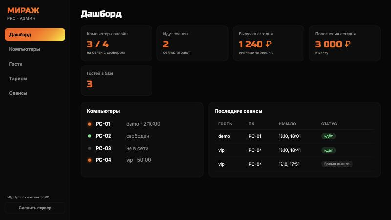
http://127.0.0.1:5080.work\data\admin-key.txt, скопируйте оттуда.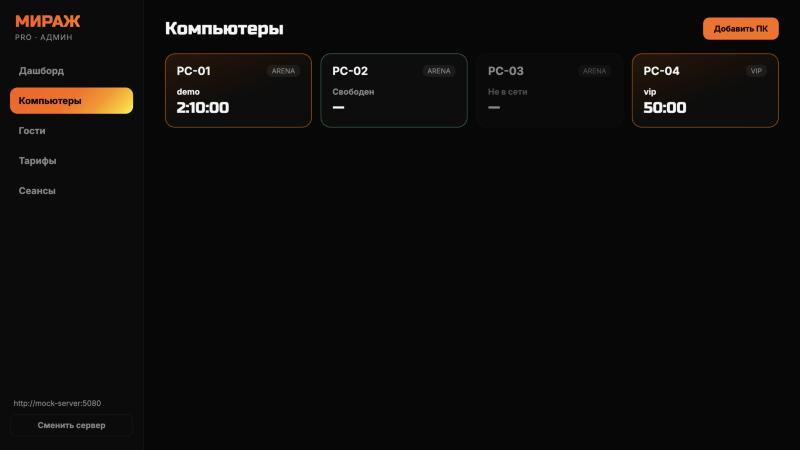
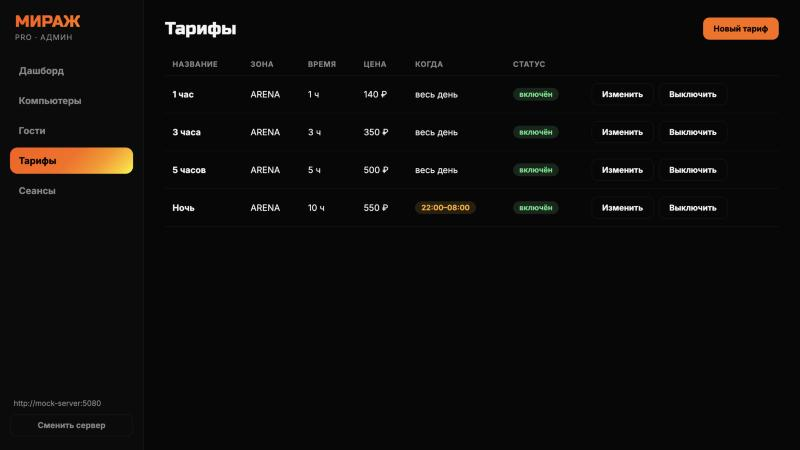
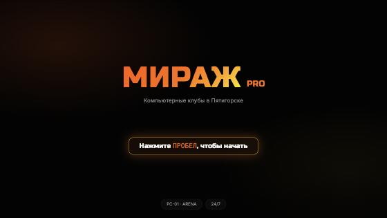
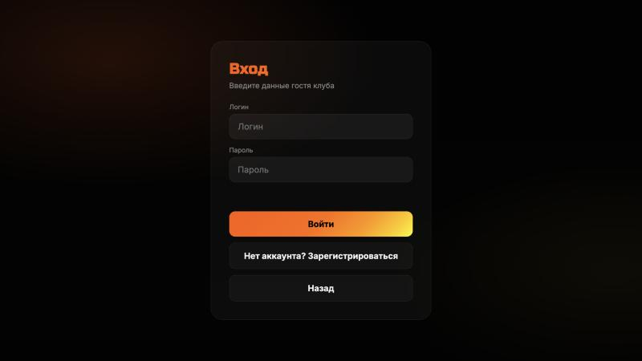
demo, пароль 12345 → кнопка Войти.demo, пароль demo → Войти.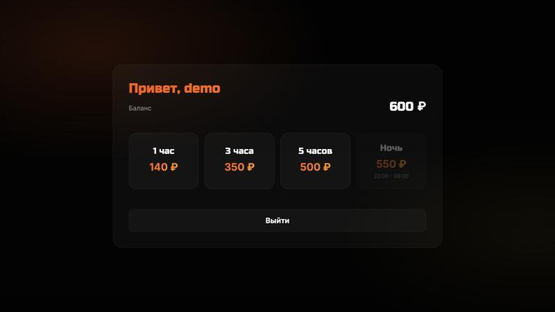
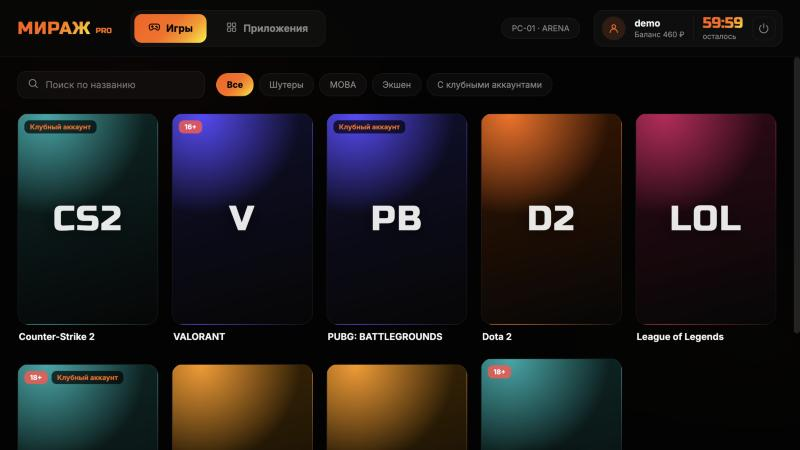
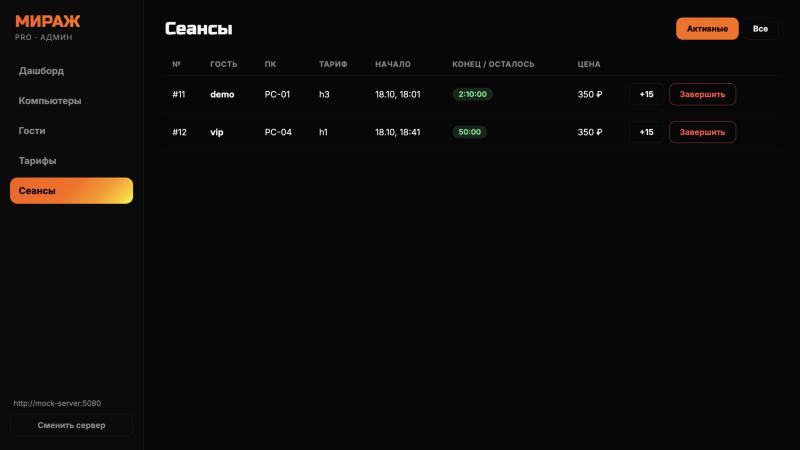
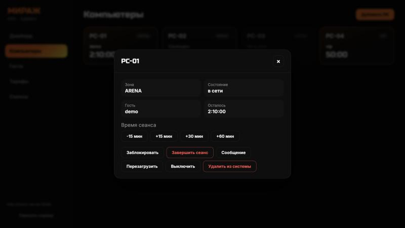
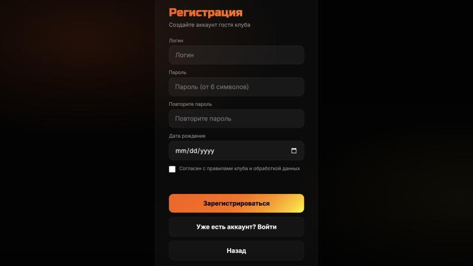
test1, Пароль secret123, Повторите пароль secret123, Дата рождения (любая, например 01.01.2000), поставьте галочку «Согласен…».test1; пароль короче 6 символов; разные пароли; без даты рождения; без галочки.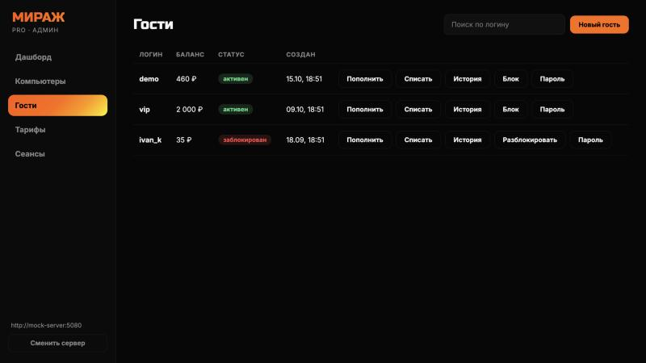
200 → Пополнить.1000 → Списать.newpass99 → Сменить. Войдите в оболочке со старым, затем с новым паролем.t30, название «30 минут», минут 30, цена 80 → Сохранить.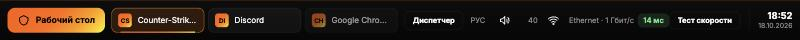
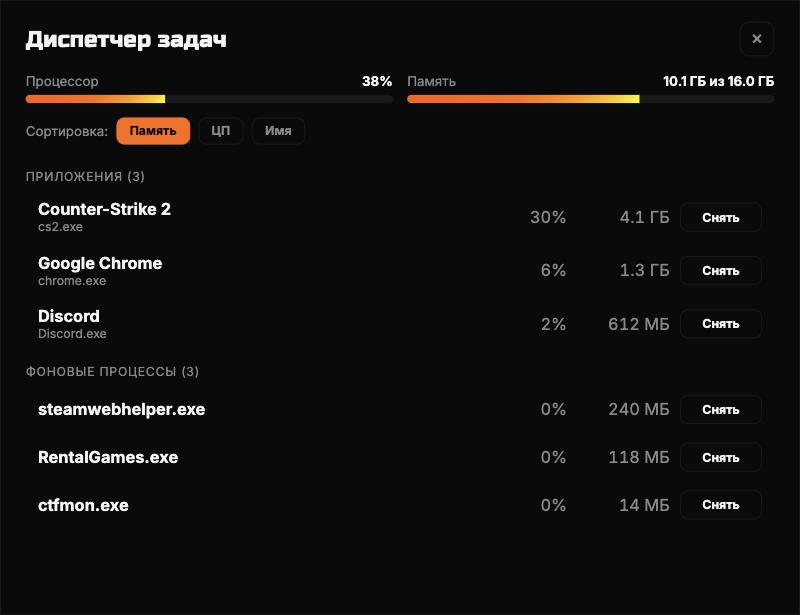
Пришлите текст, скриншоты всего, что «не работает», и файлы server.log, server.err.log из папки work.